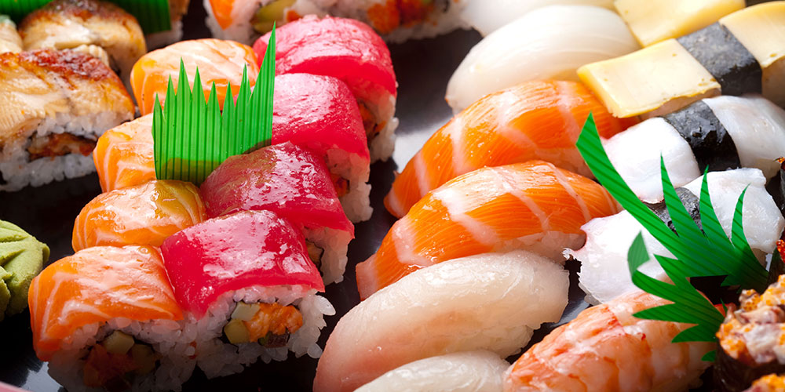

About Me
- Prior tax accountant
- Pursuing a career in web development
- Loving the journey
Why Tokyo

|
I decided to come to Tokyo to learn how to code in order to immerse myself fully into the process of becoming a developer while also fueling my passion to live abroad and experience what Tokyo has to offer. |
My Favorite Foods
|  |
SushiThe bread and butter of Japan and loved by people all around the world, this food is easily on the top 3 favorite foods list of anyone you ask. |

|
Korean BBQAlso another heavy hitter, korean bbq is not to be taken lightly as it is a crowd favorite and tastes amazing. Be sure to consume with an empty stomach however as a lot of places have an all-you-can-eat option. |

|
PastaSleep inducing but oh so good, this childhood favorite of mine never fails to leave me satisfied and wanting more. Extremely good to eat but be wary about consuming too often. An honorable mention! |